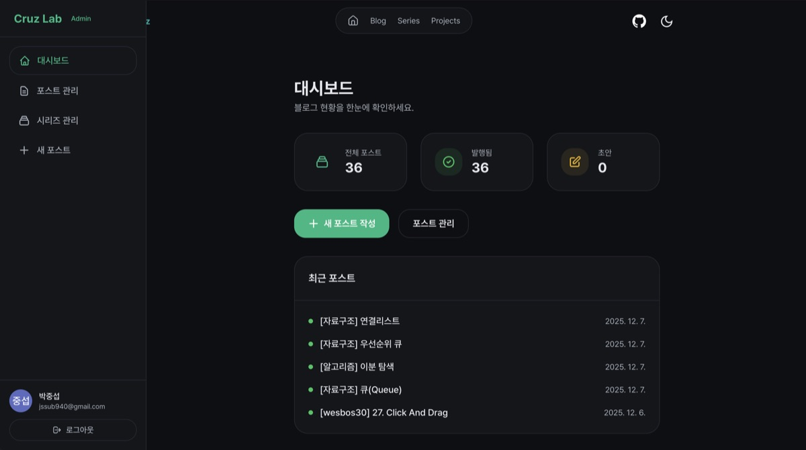
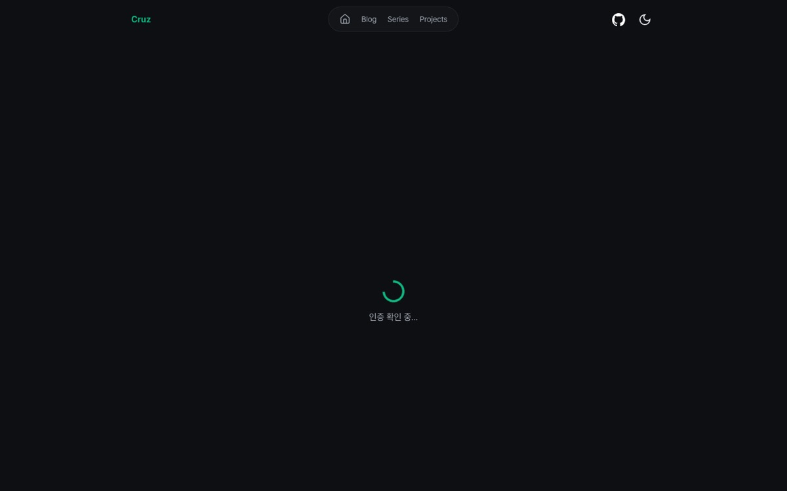
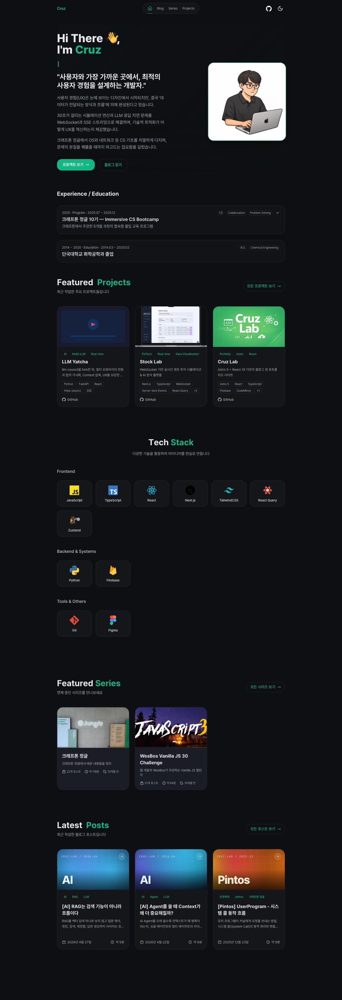
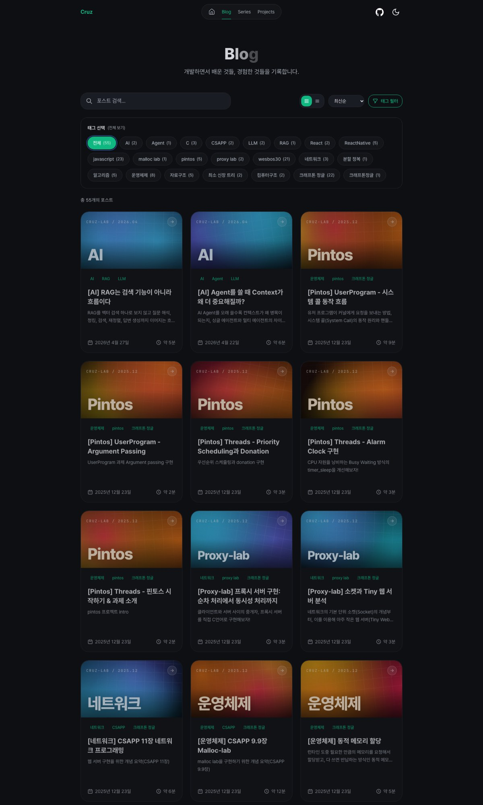
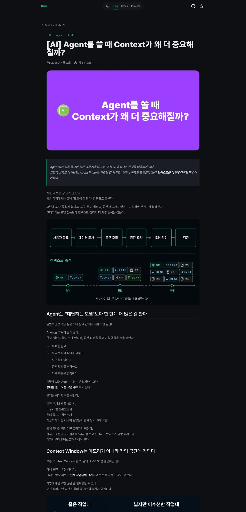
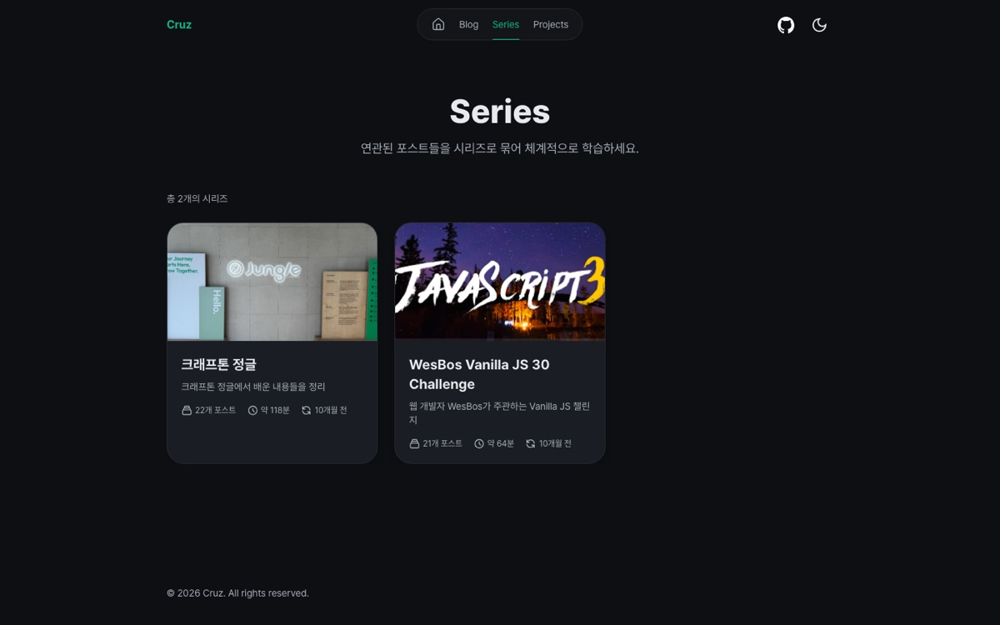
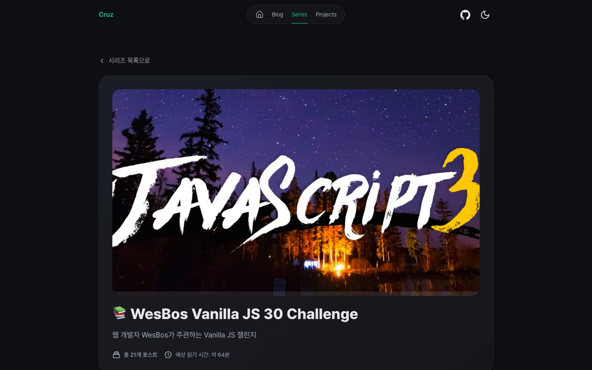
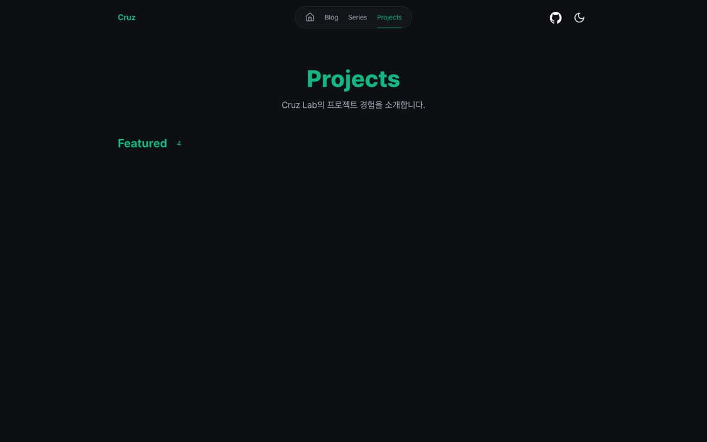
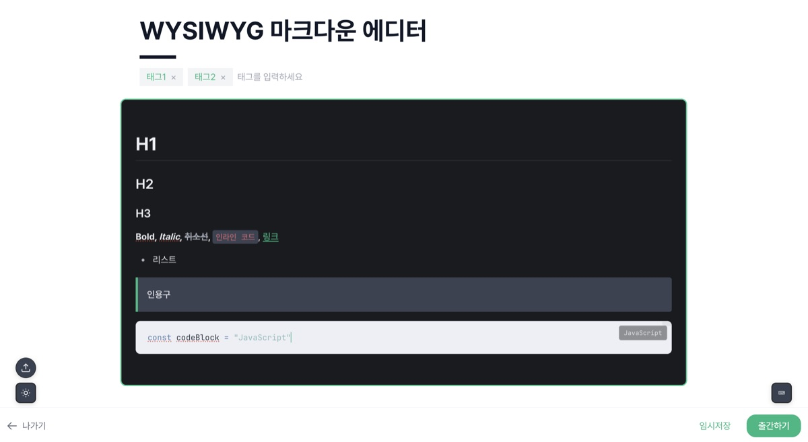

Cruz Lab · 구조 전수조사 1/2
글 한 편이 5곳의 저장소와 4개의 외부 서비스를 지나 공개된다
이 문서는 평가하지 않는다. 2026-11-06 기준으로 코드, 실제 데이터, 운영 사이트를 직접 읽고 블로그가 어떻게 돌아가는지만 그린다. 판단은 2편에 있다.
content/posts는 어느 코드도 읽지 않는다.규모
글 56편, 코드 15,455줄, 클라이언트 JS 1.4 MB
| 영역 | 기술 | 버전 |
|---|---|---|
| 프레임워크 | Astro, output: 'server', Vercel 어댑터 (nodejs22.x, 함수 리전 iad1, 엣지 icn1) | 5.13.8 |
| UI | React 19 아일랜드 (@astrojs/react) | 19.1.1 / 4.3.1 |
| 스타일·모션 | Tailwind 3 + typography, CSS 변수 토큰 · framer-motion | 3.4.17 · 12.23 |
| 에디터 | CodeMirror 6 (@uiw/react-codemirror, @codemirror/lang-markdown) | 4.25.3 |
| 마크다운 렌더 | react-markdown + remark-gfm + rehype-highlight + rehype-raw, highlight.js CSS는 cdnjs | 10.x |
| 백엔드 | Firebase Auth · Firestore · Storage (클라이언트 SDK) + firebase-admin (서버) | 12.6.0 · 13.7 |
| 폰트 | Pretendard Variable, JetBrains Mono (self-host) |
저장소
같은 글이 세 곳에, 초안은 한 곳에만 있다
Firestore posts
56 문서. 본문·메타·상태. 공개 페이지와 관리자가 읽는 유일한 원본. 43개 문서에 코드가 읽지 않는 seriesId/seriesOrder 잔존.
Firestore series
2 문서. postIds[]는 글 문서 ID(현재 데이터) 또는 slug(새로 저장 시). 글 → 시리즈 방향 연결은 없음.
Firebase Storage
images/heroes, images/blog, images/series-covers. 토큰 포함 다운로드 URL을 글에 문자열로 저장. 메타데이터 없음.
GitHub data/post-archive
3 파일. 출간 요청 안에서 Contents API로 PUT. 2026-04 이후 출간분만.
GitHub content/posts
57 파일. 2026-05-05까지 자동 커밋됨. content.config.ts가 컬렉션으로 정의하지만 getCollection('blog') 호출이 없음. "이관" 버튼만 서버 FS에서 읽음.
브라우저 localStorage
초안 cruz-lab-editor-draft:*, 테마, 시리즈 읽음 기록. 서버에 초안 없음. 대시보드 "로컬 초안" 수는 이 브라우저만 셈.
플로우
작성 → 초안 → 이미지 → 출간 → 수정 → 삭제
- 초안 — 내용이 바뀌고 1.5초 뒤, ⌘S, 탭 숨김(
pagehide) 때localStorage에 JSON으로 저장. 서버 저장 없음. - 썸네일 — 파일 선택 → 관리자 토큰 갱신 → Canvas 리사이즈(JPEG 0.85, PNG는 그대로) → Storage 클라이언트 SDK 업로드 → 토큰 URL을
heroImage에 저장. 목록 카드는 2026-11-05부터 코드 커버를 쓰고, 상세와 OG 이미지만 이 사진을 쓴다. - 본문 이미지 — 드롭·붙여넣기 → 같은 업로드 → 커서 위치에
. 여러 장 드롭 시 첫 장만. - slug — 자동 생성 없음. 메타 패널에 직접 입력.
- 분류 —
tags[]만 있다(25종, 대소문자 구분, 자유 입력). 제목 앞[카테고리]관례(57편 중 55편)는PostCover라벨에만 쓰인다. 카테고리 필드 없음. - 비공개 출간 —
isPublic:false면status:'draft'로 저장. 관리자 목록은 published만 보여 줘서 이 글은 UI에서 사라진다(현재 1건).
출간 요청
출간 버튼 한 번에 서버가 외부로 5~7번 나간다
시리즈
시리즈는 글을 가리키지만 글은 시리즈를 모른다
exists()를 호출한다. Admin SDK의 exists는 속성이므로 이 경로는 TypeError를 낸다(코드로 확인, 실행 미확인).관리자
인증은 브라우저가 하고, 규칙은 "로그인만 하면" 쓰기를 허용한다
| 경로 | 렌더 | 레이아웃 | React 마운트 | 초기 데이터 |
|---|---|---|---|---|
/admin | SSR | BaseLayout (사이트 헤더 포함) | client:load | 서버가 발행 글 목록을 props로 (인증 검사 없음) |
/admin/posts | SSR | BaseLayout | client:only | 서버가 발행 글 목록을 props로 |
/admin/posts/new, /admin/edit | 정적 | 없음 (자체 <html>, bg-white) | client:only | 클라이언트가 by-slug 호출 |
/admin/series* | 정적 | BaseLayout | 인라인 <script>의 createRoot | 클라이언트가 /api/admin/series 호출 |

관리자 대시보드 (사용자 캡처, 2025-12). 지금은 "출간 시스템 상태" 카드가 추가됨
/admin 진입 (2026-11-06 캡처). 로그인 전에는 스피너 → Google 버튼만공개 페이지
SSR + CDN 60초. 블로그 목록 HTML은 353 KB
| 경로 | 렌더 | 데이터 | HTML | CDN | React 아일랜드 |
|---|---|---|---|---|---|
/ | SSR | posts + series | 97.8 KB | 60 s · HIT 확인 | 21개 (히어로, 카드, 커서, 진행바, 글자 등장 …) |
/blog/ | SSR | posts 55 (본문 제외) + 태그 | 353 KB | 60 s · HIT 확인 | BlogPostList client:load (props 47.8 KB) + TextReveal |
/blog/[slug] | SSR | posts 1 | 29.6 KB | 60 s (404 제외) | 0 — MarkdownPostView는 서버 렌더만 |
/blog/tag/[tag] | SSR | posts 전체 필터 | 60 s | BlogCard ×N | |
/series/, /series/[slug] | SSR | series + posts | 23.4 KB | 60 s | SeriesCard ×N / 0 |
/projects/** | 정적 | src/content/projects (4 + 8) | 35.1 KB | 정적 HIT | ProjectCard ×N / 0 |
/rss.xml, /sitemap-posts.xml | SSR | posts (+series) | 0 / 3600 s | ||
/api/posts/by-slug | SSR | posts 1 (status 무관) | 없음 | 인증 없음 |




/series/ (사진 커버)
/series/wesbos
/projects/ 헤드리스 캡처 — 카드는 서버 HTML에opacity:0으로 들어 있고 JS가 돌아야 보인다initial opacity 0.편집기
소스 모드 CodeMirror. 단축키 12개, 슬래시 항목 9개, 확장 지점 0개

2025-12 사용자 캡처 (당시 WYSIWYG). 지금 코드에는 이 에디터가 없다. 현재는 소스 모드 CodeMirror다구성: basicSetup(줄번호·접기·자동완성 끔, 검색 켬) + 선택 그리기, 활성 줄, 괄호 짝, 들여쓰기 2칸, markdown({addKeymap:true}), 커스텀 하이라이트 9태그, 줄 바꿈, 드롭·붙여넣기. 미리보기·분할·라이브 프리뷰 없음. 읽기 시간 공식이 에디터(공백 단어 수)와 유틸(한글 글자 보정) 2개.
Astro · React
Astro가 데이터와 페이지를, React가 장식과 관리자를 맡는다
이력
출간 경로가 세 번 바뀌었고, 마지막 글은 6개월 전이다
content/posts + GitHub API 출간 경로 (PUBLISHING.md).data/post-archive 백업. 새 글 3편. 출간마다 커밋 2개(content/posts + 백업).Reveal.astro, 코드 커버. PR #2 병합.출처
직접 확인한 것
코드: src/** 148파일 전부, astro.config.mjs, firestore.rules, storage.rules, firestore.indexes.json, content.config.ts, scripts/*, tools/*, functions/src/index.ts. 데이터: Firebase Admin SDK로 posts·series·comments 읽기 전용 조회. 운영: curl -I https://www.cruzlab.dev/… 응답 헤더와 크기, dist/client/_astro/*.js 크기. 이력: git log. 캡처: 헤드리스 Chrome 1440×900, 2026-11-06 01:06~01:08 KST. 관리자 실행 화면은 로그인이 필요해 캡처하지 못했고 코드로 정리했다. 마크다운 원본: docs/blog-rebuilding/2026-11-06-blog-architecture-audit-1-current-state.md.